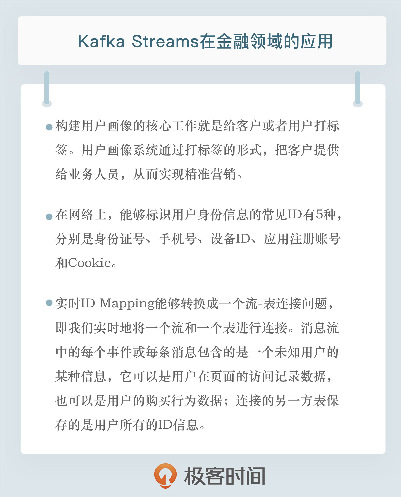

- 00 开篇词 为什么要学习Kafka？.md.html
- 01 消息引擎系统ABC.md.html
- 02 一篇文章带你快速搞定Kafka术语.md.html
- 03 Kafka只是消息引擎系统吗？.md.html
- 04 我应该选择哪种Kafka？.md.html
- 05 聊聊Kafka的版本号.md.html
- 06 Kafka线上集群部署方案怎么做？.md.html
- 07 最最最重要的集群参数配置（上）.md.html
- 08 最最最重要的集群参数配置（下）.md.html
- 09 生产者消息分区机制原理剖析.md.html
- 10 生产者压缩算法面面观.md.html
- 11 无消息丢失配置怎么实现？.md.html
- 12 客户端都有哪些不常见但是很高级的功能？.md.html
- 13 Java生产者是如何管理TCP连接的？.md.html
- 14 幂等生产者和事务生产者是一回事吗？.md.html
- 15 消费者组到底是什么？.md.html
- 16 揭开神秘的“位移主题”面纱.md.html
- 17 消费者组重平衡能避免吗？.md.html
- 18 Kafka中位移提交那些事儿.md.html
- 19 CommitFailedException异常怎么处理？.md.html
- 20 多线程开发消费者实例.md.html
- 21 Java 消费者是如何管理TCP连接的_.md.html
- 22 消费者组消费进度监控都怎么实现？.md.html
- 23 Kafka副本机制详解.md.html
- 24 请求是怎么被处理的？.md.html
- 25 消费者组重平衡全流程解析.md.html
- 26 你一定不能错过的Kafka控制器.md.html
- 27 关于高水位和Leader Epoch的讨论.md.html
- 28 主题管理知多少_.md.html
- 29 Kafka动态配置了解下？.md.html
- 30 怎么重设消费者组位移？.md.html
- 31 常见工具脚本大汇总.md.html
- 32 KafkaAdminClient：Kafka的运维利器.md.html
- 33 Kafka认证机制用哪家？.md.html
- 34 云环境下的授权该怎么做？.md.html
- 35 跨集群备份解决方案MirrorMaker.md.html
- 36 你应该怎么监控Kafka？.md.html
- 37 主流的Kafka监控框架.md.html
- 38 调优Kafka，你做到了吗？.md.html
- 39 从0搭建基于Kafka的企业级实时日志流处理平台.md.html
- 40 Kafka Streams与其他流处理平台的差异在哪里？.md.html
- 41 Kafka Streams DSL开发实例.md.html
- 42 Kafka Streams在金融领域的应用.md.html
- 加餐 搭建开发环境、阅读源码方法、经典学习资料大揭秘.md.html
- 用户故事 黄云：行百里者半九十.md.html
- 结束语 以梦为马，莫负韶华！.md.html
- 捐赠
42 Kafka Streams在金融领域的应用
你好，我是胡夕。今天我要和你分享的主题是：Kafka Streams在金融领域的应用。
背景
金融领域囊括的内容有很多，我今天分享的主要是，如何利用大数据技术，特别是Kafka Streams实时计算框架，来帮助我们更好地做企业用户洞察。
众所周知，金融领域内的获客成本是相当高的，一线城市高净值白领的获客成本通常可达上千元。面对如此巨大的成本压力，金融企业一方面要降低广告投放的获客成本，另一方面要做好精细化运营，实现客户生命周期内价值（Custom Lifecycle Value, CLV）的最大化。
实现价值最大化的一个重要途径就是做好用户洞察，而用户洞察要求你要更深度地了解你的客户，即所谓的Know Your Customer（KYC），真正做到以客户为中心，不断地满足客户需求。
为了实现KYC，传统的做法是花费大量的时间与客户见面，做面对面的沟通以了解客户的情况。但是，用这种方式得到的数据往往是不真实的，毕竟客户内心是有潜在的自我保护意识的，短时间内的面对面交流很难真正洞察到客户的真实诉求。
相反地，渗透到每个人日常生活方方面面的大数据信息则代表了客户的实际需求。比如客户经常浏览哪些网站、都买过什么东西、最喜欢的视频类型是什么。这些数据看似很随意，但都表征了客户最真实的想法。将这些数据汇总在一起，我们就能完整地构造出客户的画像，这就是所谓的用户画像（User Profile）技术。
用户画像
用户画像听起来很玄妙，但实际上你应该是很熟悉的。你的很多基本信息，比如性别、年龄、所属行业、工资收入和爱好等，都是用户画像的一部分。举个例子，我们可以这样描述一个人：某某某，男性，28岁，未婚，工资水平大致在15000到20000元之间，是一名大数据开发工程师，居住在北京天通苑小区，平时加班很多，喜欢动漫或游戏。
其实，这一连串的描述就是典型的用户画像。通俗点来说，构建用户画像的核心工作就是给客户或用户打标签（Tagging）。刚刚那一连串的描述就是用户系统中的典型标签。用户画像系统通过打标签的形式，把客户提供给业务人员，从而实现精准营销。
ID映射（ID Mapping）
用户画像的好处不言而喻，而且标签打得越多越丰富，就越能精确地表征一个人的方方面面。不过，在打一个个具体的标签之前，弄清楚“你是谁”是所有用户画像系统首要考虑的问题，这个问题也被称为ID识别问题。
所谓的ID即Identification，表示用户身份。在网络上，能够标识用户身份信息的常见ID有5种。
- 身份证号：这是最能表征身份的ID信息，每个身份证号只会对应一个人。
- 手机号：手机号通常能较好地表征身份。虽然会出现同一个人有多个手机号或一个手机号在不同时期被多个人使用的情形，但大部分互联网应用使用手机号表征用户身份的做法是很流行的。
- 设备ID：在移动互联网时代，这主要是指手机的设备ID或Mac、iPad等移动终端设备的设备ID。特别是手机的设备ID，在很多场景下具备定位和识别用户的功能。常见的设备ID有iOS端的IDFA和Android端的IMEI。
- 应用注册账号：这属于比较弱的一类ID。每个人在不同的应用上可能会注册不同的账号，但依然有很多人使用通用的注册账号名称，因此具有一定的关联性和识别性。
- Cookie：在PC时代，浏览器端的Cookie信息是很重要的数据，它是网络上表征用户信息的重要手段之一。只不过随着移动互联网时代的来临，Cookie早已江河日下，如今作为ID数据的价值也越来越小了。我个人甚至认为，在构建基于移动互联网的新一代用户画像时，Cookie可能要被抛弃了。
在构建用户画像系统时，我们会从多个数据源上源源不断地收集各种个人用户数据。通常情况下，这些数据不会全部携带以上这些ID信息。比如在读取浏览器的浏览历史时，你获取的是Cookie数据，而读取用户在某个App上的访问行为数据时，你拿到的是用户的设备ID和注册账号信息。
倘若这些数据表征的都是一个用户的信息，我们的用户画像系统如何识别出来呢？换句话说，你需要一种手段或技术帮你做各个ID的打通或映射。这就是用户画像领域的ID映射问题。
实时ID Mapping
我举个简单的例子。假设有一个金融理财用户张三，他首先在苹果手机上访问了某理财产品，然后在安卓手机上注册了该理财产品的账号，最后在电脑上登录该账号，并购买了该理财产品。ID Mapping 就是要将这些不同端或设备上的用户信息聚合起来，然后找出并打通用户所关联的所有ID信息。
实时ID Mapping的要求就更高了，它要求我们能够实时地分析从各个设备收集来的数据，并在很短的时间内完成ID Mapping。打通用户ID身份的时间越短，我们就能越快地为其打上更多的标签，从而让用户画像发挥更大的价值。
从实时计算或流处理的角度来看，实时ID Mapping能够转换成一个流-表连接问题（Stream-Table Join），即我们实时地将一个流和一个表进行连接。
消息流中的每个事件或每条消息包含的是一个未知用户的某种信息，它可以是用户在页面的访问记录数据，也可以是用户的购买行为数据。这些消息中可能会包含我们刚才提到的若干种ID信息，比如页面访问信息中可能包含设备ID，也可能包含注册账号，而购买行为信息中可能包含身份证信息和手机号等。
连接的另一方表保存的是用户所有的ID信息，随着连接的不断深入，表中保存的ID品类会越来越丰富，也就是说，流中的数据会被不断地补充进表中，最终实现对用户所有ID的打通。
Kafka Streams实现
好了，现在我们就来看看如何使用Kafka Streams来实现一个特定场景下的实时ID Mapping。为了方便理解，我们假设ID Mapping只关心身份证号、手机号以及设备ID。下面是用Avro写成的Schema格式：
{
"namespace": "kafkalearn.userprofile.idmapping",
"type": "record",
"name": "IDMapping",
"fields": [
{"name": "deviceId", "type": "string"},
{"name": "idCard", "type": "string"},
{"name": "phone", "type": "string"}
]
}
顺便说一下，Avro是Java或大数据生态圈常用的序列化编码机制，比如直接使用JSON或XML保存对象。Avro能极大地节省磁盘占用空间或网络I/O传输量，因此普遍应用于大数据量下的数据传输。
在这个场景下，我们需要两个Kafka主题，一个用于构造表，另一个用于构建流。这两个主题的消息格式都是上面的IDMapping对象。
新用户在填写手机号注册App时，会向第一个主题发送一条消息，该用户后续在App上的所有访问记录，也都会以消息的形式发送到第二个主题。值得注意的是，发送到第二个主题上的消息有可能携带其他的ID信息，比如手机号或设备ID等。就像我刚刚所说的，这是一个典型的流-表实时连接场景，连接之后，我们就能够将用户的所有数据补齐，实现ID Mapping的打通。
基于这个设计思路，我先给出完整的Kafka Streams代码，稍后我会对重点部分进行详细解释：
package kafkalearn.userprofile.idmapping;
// omit imports……
public class IDMappingStreams {
public static void main(String[] args) throws Exception {
if (args.length < 1) {
throw new IllegalArgumentException("Must specify the path for a configuration file.");
}
IDMappingStreams instance = new IDMappingStreams();
Properties envProps = instance.loadProperties(args[0]);
Properties streamProps = instance.buildStreamsProperties(envProps);
Topology topology = instance.buildTopology(envProps);
instance.createTopics(envProps);
final KafkaStreams streams = new KafkaStreams(topology, streamProps);
final CountDownLatch latch = new CountDownLatch(1);
// Attach shutdown handler to catch Control-C.
Runtime.getRuntime().addShutdownHook(new Thread("streams-shutdown-hook") {
@Override
public void run() {
streams.close();
latch.countDown();
}
});
try {
streams.start();
latch.await();
} catch (Throwable e) {
System.exit(1);
}
System.exit(0);
}
private Properties loadProperties(String propertyFilePath) throws IOException {
Properties envProps = new Properties();
try (FileInputStream input = new FileInputStream(propertyFilePath)) {
envProps.load(input);
return envProps;
}
}
private Properties buildStreamsProperties(Properties envProps) {
Properties props = new Properties();
props.put(StreamsConfig.APPLICATION_ID_CONFIG, envProps.getProperty("application.id"));
props.put(StreamsConfig.BOOTSTRAP_SERVERS_CONFIG, envProps.getProperty("bootstrap.servers"));
props.put(StreamsConfig.DEFAULT_KEY_SERDE_CLASS_CONFIG, Serdes.String().getClass());
props.put(StreamsConfig.DEFAULT_VALUE_SERDE_CLASS_CONFIG, Serdes.String().getClass());
return props;
}
private void createTopics(Properties envProps) {
Map<String, Object> config = new HashMap<>();
config.put(AdminClientConfig.BOOTSTRAP_SERVERS_CONFIG, envProps.getProperty("bootstrap.servers"));
try (AdminClient client = AdminClient.create(config)) {
List<NewTopic> topics = new ArrayList<>();
topics.add(new NewTopic(
envProps.getProperty("stream.topic.name"),
Integer.parseInt(envProps.getProperty("stream.topic.partitions")),
Short.parseShort(envProps.getProperty("stream.topic.replication.factor"))));
topics.add(new NewTopic(
envProps.getProperty("table.topic.name"),
Integer.parseInt(envProps.getProperty("table.topic.partitions")),
Short.parseShort(envProps.getProperty("table.topic.replication.factor"))));
client.createTopics(topics);
}
}
private Topology buildTopology(Properties envProps) {
final StreamsBuilder builder = new StreamsBuilder();
final String streamTopic = envProps.getProperty("stream.topic.name");
final String rekeyedTopic = envProps.getProperty("rekeyed.topic.name");
final String tableTopic = envProps.getProperty("table.topic.name");
final String outputTopic = envProps.getProperty("output.topic.name");
final Gson gson = new Gson();
// 1. 构造表
KStream<String, IDMapping> rekeyed = builder.<String, String>stream(tableTopic)
.mapValues(json -> gson.fromJson(json, IDMapping.class))
.filter((noKey, idMapping) -> !Objects.isNull(idMapping.getPhone()))
.map((noKey, idMapping) -> new KeyValue<>(idMapping.getPhone(), idMapping));
rekeyed.to(rekeyedTopic);
KTable<String, IDMapping> table = builder.table(rekeyedTopic);
// 2. 流-表连接
KStream<String, String> joinedStream = builder.<String, String>stream(streamTopic)
.mapValues(json -> gson.fromJson(json, IDMapping.class))
.map((noKey, idMapping) -> new KeyValue<>(idMapping.getPhone(), idMapping))
.leftJoin(table, (value1, value2) -> IDMapping.newBuilder()
.setPhone(value2.getPhone() == null ? value1.getPhone() : value2.getPhone())
.setDeviceId(value2.getDeviceId() == null ? value1.getDeviceId() : value2.getDeviceId())
.setIdCard(value2.getIdCard() == null ? value1.getIdCard() : value2.getIdCard())
.build())
.mapValues(v -> gson.toJson(v));
joinedStream.to(outputTopic);
return builder.build();
}
}
这个Java类代码中最重要的方法是buildTopology函数，它构造了我们打通ID Mapping的所有逻辑。
在该方法中，我们首先构造了StreamsBuilder对象实例，这是构造任何Kafka Streams应用的第一步。之后我们读取配置文件，获取了要读写的所有Kafka主题名。在这个例子中，我们需要用到4个主题，它们的作用如下：
- streamTopic：保存用户登录App后发生的各种行为数据，格式是IDMapping对象的JSON串。你可能会问，前面不是都创建Avro Schema文件了吗，怎么这里又用回JSON了呢？原因是这样的：社区版的Kafka没有提供Avro的序列化/反序列化类支持，如果我要使用Avro，必须改用Confluent公司提供的Kafka，但这会偏离我们专栏想要介绍Apache Kafka的初衷。所以，我还是使用JSON进行说明。这里我只是用了Avro Code Generator帮我们提供IDMapping对象各个字段的set/get方法，你使用Lombok也是可以的。
- rekeyedTopic：这个主题是一个中间主题，它将streamTopic中的手机号提取出来作为消息的Key，同时维持消息体不变。
- tableTopic：保存用户注册App时填写的手机号。我们要使用这个主题构造连接时要用到的表数据。
- outputTopic：保存连接后的输出信息，即打通了用户所有ID数据的IDMapping对象，将其转换成JSON后输出。
buildTopology的第一步是构造表，即KTable对象。我们修改初始的消息流，以用户注册的手机号作为Key，构造了一个中间流，之后将这个流写入到rekeyedTopic，最后直接使用builder.table方法构造出KTable。这样每当有新用户注册时，该KTable都会新增一条数据。
有了表之后，我们继续构造消息流来封装用户登录App之后的行为数据，我们同样提取出手机号作为要连接的Key，之后使用KStream的leftJoin方法将其与上一步的KTable对象进行关联。
在关联的过程中，我们同时提取两边的信息，尽可能地补充到最后生成的IDMapping对象中，然后将这个生成的IDMapping实例返回到新生成的流中。最后，我们将它写入到outputTopic中保存。
至此，我们使用了不到200行的Java代码，就简单实现了一个真实场景下的实时ID Mapping任务。理论上，你可以将这个例子继续扩充，扩展到任意多个ID Mapping，甚至是含有其他标签的数据，连接原理是相通的。在我自己的项目中，我借助于Kafka Streams帮助我实现了用户画像系统的部分功能，而ID Mapping就是其中的一个。
小结
好了，我们小结一下。今天，我展示了Kafka Streams在金融领域的一个应用案例，重点演示了如何利用连接函数来实时关联流和表。其实，Kafka Streams提供的功能远不止这些，我推荐你阅读一下官网的教程，然后把自己的一些轻量级的实时计算线上任务改为使用Kafka Streams来实现。

开放讨论
最后，我们来讨论一个问题。在刚刚的这个例子中，你觉得我为什么使用leftJoin方法而不是join方法呢？（小提示：可以对比一下SQL中的left join和inner join。）
欢迎写下你的思考和答案，我们一起讨论。如果你觉得有所收获，也欢迎把文章分享给你的朋友。
© 2019 - 2023 Liangliang Lee. Powered by gin and hexo-theme-book.